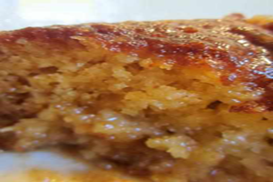
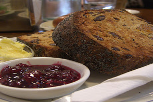

Malva PuddingNext

African Malva Pudding, South African
Ingredients Needed:
6 1/2 ounces sugar (3/4 cup, 200 ml, or 180 g)
2 large eggs
1 tablespoon apricot jam
5 ounces all-purpose flour (150 g)
1 teaspoon baking soda
1/2 teaspoon salt
1 tablespoon butter (a generous tablespoon)
1 teaspoon vinegar
1/3 cup milk
For the sauce
3/4 cup fresh cream (200 ml)
3 1/2 ounces butter (100 g)
3 -5 ounces sugar (90 - 150 g)
1/3 cup hot water (90 ml)
2 teaspoons vanilla essence
Procedure:
1. Preheat oven to 350 deg F/180 deg Celsius. (NOTE: I find my convection/fan oven very hot. I baked the pudding at 170 deg C and had to turn it down to 160 deg C/325 deg F for fear the pudding might burn. You know your oven -- Adjust accordingly).
2. Grease an oven dish. I used a 7 x 7 x 1 1/2 inch Pyrex dish. (18 x 18 x 4 1/2 cm)
3. Beat or whip the sugar and eggs. It's quickest in a food processor, or use electric beaters. Beat until thick and lemon coloured, then add the jelly (jam) and mix through.
4. Melt the butter (don't boil) and add the butter and vinegar to the wet mixture.
5. Sieve, or simply mix together: the flour, soda and salt.
6. Add this mixture with the milk to the egg mixture in the processor or mixing bowl. Beat well.
7. Pour into an oven-proof dish and bake until pudding is brown and well-risen -- depending on your oven and oven dish this will be between 30 - 45 minutes. (Mine was done in 30 minutes this time).
8. In a pot, melt together the ingredients for the sauce, and stir well.
9. Pour it over the pudding as soon as it comes out of the oven.
10. Leave to stand awhile before serving. Serve warm. Because it's rich it does not really need enhancement, but if you want, serve with vanilla ice cream.
Gourmet Foods
Poly BakedNext
South African Roly-Poly Baked Dessert
Ingredients Needed:
2 cups flour (500 ml)
3 teaspoons baking powder (15 ml)
1 teaspoon salt
1/2 cup butter (1 stick or 125 g or 4 oz)
2 eggs, beaten
milk, a few tablespoons, see instructions
1 teaspoon vanilla
apricot jam
Sauce
1 1/2 cups boiling water (375 ml)
2 tablespoons butter (30 ml)
1 teaspoon vanilla
Procedure:
1. Preheat oven to 350 deg F/180 deg Celsius.
2. Grease a suitable oven dish, like a rectangular Pyrex dish.
3. Mix the flour, baking powder and salt, and rub in the butter. (Can be done in a processor, also the next step).
4. Add the beaten eggs, and then just enough milk, tablespoon by tablespoon, to make a fairly firm dough.
5. It's easy to watch in the processor: as soon as a firm ball forms which is not sticky, but soft, the dough is ready.
6. Roll the dough out quite thinly -- on a surface sprinkled with flour -- and form a rectangle, by cutting off bits and adding it on again -- you know how.
7. Spread the dough with apricot jam.
8. From one of the LONG sides, roll it up like a swiss roll.
9. Cut this roll into 1 inch slices, using a serrated knife such as a bread knife. The jam WILL ooze out.
10. Pack the slices, cut sides up, closely together, in the greased dish. Scoop the jam which oozed out on the surface you used, and just plonk back on to these rolls.
11. In a pot, mix the boiling water (from your kettle), sugar, butter and vanilla and stir until sugar dissolves.
12. With a tablespoon, ladle evenly over the slices of pudding, but beware: you will have more sauce than the baking dish can take. Usually you'll be left with about 3/4 cup. KEEP IT.
13. Bake for about 40 - 45 minutes.
14. When the sizzling pudding comes out of the oven, carefully pour the extra sauce over the centre slices: I find that, when baking, the sauce tends to pool on the sides.
15. Now the hot pudding will absorb much of the leftover sauce in seconds. Use as much or as little as you like.
16. Serve hot, with custard, ice cream or sweetened whipped cream.
Gourmet Foods
KrakelingeNext

African Krakelinge (South African Cookies)
Ingredients Needed:
1 cup butter
1/2 cup sugar
1 egg, beaten
3 cups flour
1 teaspoon baking powder
1 egg yolk
sugar
almonds, chopped
Procedure:
1. Preheat oven 400°F.
2. In bowl, cream butter and sugar. Beat in egg.
3. Sift flour and baking powder together and stir into the butter mixture.
4. Roll dough about 1/4 inch thick. Brush with the egg yolk, then sprinkle generously with sugar and then the almonds.
5. Cut into narrow strips. Form each strip into a figure-8 shape.
6. Bake on lightly greased baking sheet 8-10 minutes.
Gourmet Foods
Coconut Milk Stew Next
Brazilian Fish & Coconut Milk Stew
Ingredients Needed:
1 lb fresh cod (or other white fleshy fish)
2 limes, juice of
1 teaspoon salt
2 tablespoons oil
2 onions, diced
1 bell pepper, diced (any color)
3 garlic cloves, minced
6 Tomatoes, peeled seeded, diced
2 cups coconut milk
1 teaspoon Old Bay Seasoning
pepper
Procedure:
1. Fish Marinade:.
2. Mix juice of 2 limes and salt in a glass or plastic bowl - lay your fish in the bowl and try to cover as much as possible. Refrigerate for 30 minutes.
3. While marinating - heat oil in your soup pot - saute onions and peppers until onions are opaque. Add Garlic and saute for another minute. Add tomatoes and let simmer for approximately 10 minutes or until tomatoes have reduced somewhat.
4. Stirr in coconut milk and fish including the marinade, old bay seasoning and pepper. Do not add any more salt - this recipe borrows its salt from the fish and the "old bay" seasoning. Bring to a boil then reduce heat and simmer for 10 minutes or until fish is cooked and chunked apart.
Gourmet Foods
Black Bean Soup
Brazilian Black Bean Soup
Ingredients Needed:
2 tablespoons olive oil
3 cups onions, chopped
8 garlic cloves, chopped and divided
1 -2 carrot, diced
3 teaspoons ground cumin
1 red bell pepper, diced
2 (15 1/2 ounce) cans black beans, rinsed and drained
1/2 cup water
2 cups vegetable broth or 2 cups chicken broth
1 cup orange juice
1 pinch cayenne pepper, more if you like it spicier
sour cream (optional)
Procedure:
1. Heat oil in large sauce pan over medium heat.
2. Add onion, half of the garlic and carrots.
3. Season with cumin.
4. Cook stirring until onion and carrots are tender.
5. Stir in remaining garlic and the red pepper.
6. Continue cooking till tender.
7. Add beans, water broth, and orange juice.
8. Season with cayenne.
9. Place 1/2 or more of mixture in blender or food processor.
10. Process until smooth.
11. Return puree to pan.
12. Simmer 10-15 minutes to blend flavors.
13. Serve in bowls.
14. Garnish with sour cream.
Gourmet Foods